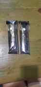
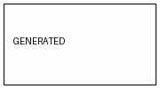

30000 / 多媒體上站測試
單元放行 gate：先圖片，再音訊，再影片。每一種都要真的嵌入頁面並由瀏覽器回報載入狀態，不用文字連結冒充成功。
01 圖片
來源：榮哲在本次對話直接傳來的「三民路 1 出口」照片；經 ImgBB 取得 direct link 後，直接嵌入本頁。這條專門測試手機實際工作流：傳給 EVA → ImgBB → 網站。

TESTING / 等待載入…
來源：先前使用者實際上傳的照片，已轉成 JPEG binary 存於本站 repo。

TESTING / 等待載入…
來源：先前隔離實驗中由系統自行產生的 JPEG，已存於本站 repo。

TESTING / 等待載入…
來源：Wikimedia Commons，Diamond sutra.jpg，Or.8210/P.2，public domain；不轉存，直接 hotlink。

TESTING / 等待載入…
02 音訊
來源：本站 media-lab 的極短測試音。用途是先驗證 GitHub Pages 自己承載音訊是否能正常提供給 HTML5 audio。
TESTING / 等待 metadata…
來源：Wikimedia Commons，Speech of Netaji Subhas Chandra Bose Tokyo 1943.ogg，CC0，53 秒；網站不搬檔，瀏覽器直接讀 Commons。
TESTING / 等待 metadata…
03 影片
來源：本站 media-lab 的極短 H.264 MP4。用途是驗證 GitHub Pages 能否直接承載並由 HTML5 video 播放。
TESTING / 等待 metadata…
來源：Wikimedia Commons，Nicotine3Dan2-12-seconds-mp4.webm，12 秒、約 147 KB。這條測試跨站 WebM 影音 hotlink。
TESTING / 等待 metadata…
判定規則
每一條路徑都獨立記錄 PASS / BLOCKED。圖片至少一條成功後才能進音訊；音訊至少一條成功後才算可升級到影片；影片至少一條成功後，才表示此單元已有完整圖／聲／影上站能力。若外網 hotlink 失敗，後續改來源或合法轉存；若 GitHub 內部承載成功，會把它當作小型媒體的候選標準流程。